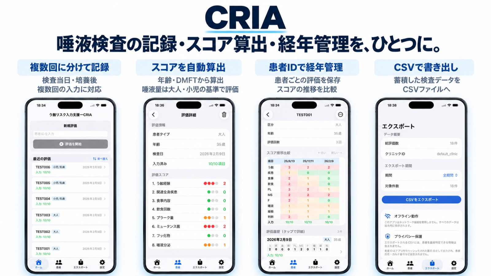

う蝕リスク入力支援
CRIA（う蝕リスク入力支援）

唾液検査の記録・スコア算出・経年管理を、ひとつに。
- iPhone
- iPad
- 無料
できること
- 複数回に分けて記録（検査当日・培養後）
- スコアを自動算出（年齢・DMFT から。唾液量は大人・小児の基準で評価）
- 患者 ID で経年管理（スコアの推移を比較）
- CSV で書き出し
- オフライン動作（ネットワークを使わず端末内に保存）
- 書き出す CSV に患者を直接特定できる情報は含めません
対応環境
| iPhone・iPad | App Store（無料） |
|---|